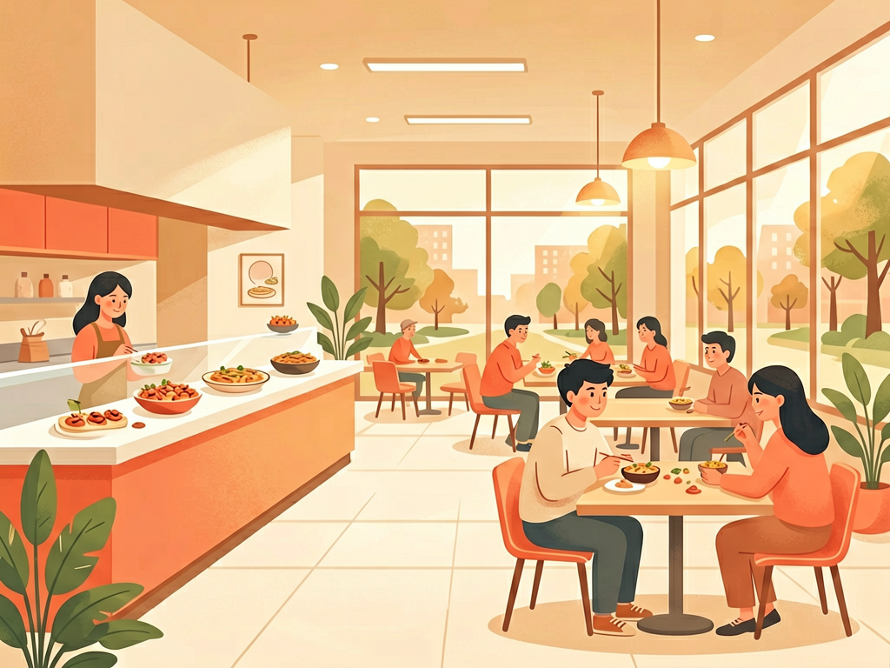
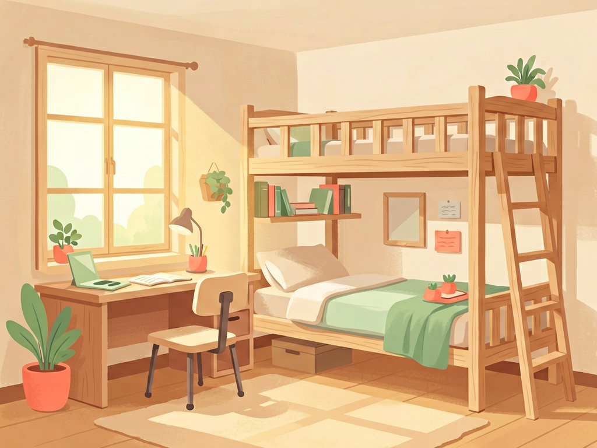
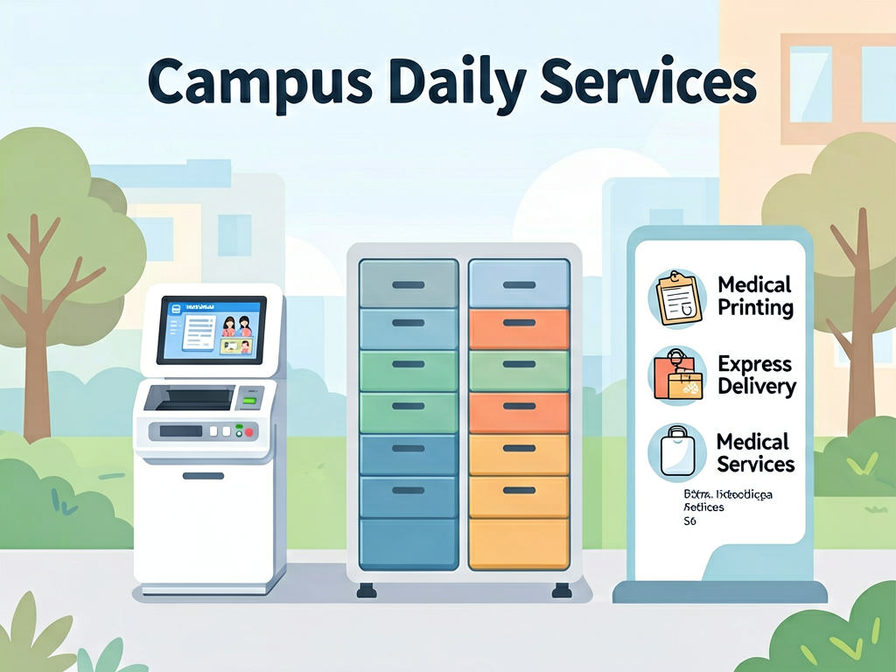

从军都山下到红山湖畔，衣食住行一站搞定。
以下内容由石大热心学长学姐整理，覆盖食堂、宿舍、校园卡、生活设施、运动健康、交通出行及费用参考。
校区分区速查
食堂与外卖

校区饮食保障场所包括第三学生餐厅（三餐/D11）、第二学生餐厅、第一学生餐厅、C5汇利美食广场、校园移动餐车。基本伙最高菜品不超过6元，提供半份餐食。
第三学生餐厅
D区，8000㎡，2000+座位。一楼：风味（蜜雪冰城、新疆风味、麻辣烫等）。二楼：基本伙（水饺自助、免费粥汤）。地下：超市、打印店、理发店。
7:30-10:30 / 11:30-14:30 / 18:00-20:30第一、二学生餐厅
一餐：快餐为主，地下八点半超市（面馆、烤串、电信营业厅）。二餐：需绑定克职院校园卡。B13旁设校内医务室。
快餐C5广场 &
C5：教学楼东北角300㎡，麻辣烫、烧烤、点歌电视。
外卖
校内平台：石克服务、花生校园、快团食尚派。一般送至宿舍楼门口。校外：美团/宅急送，超配送范围将地址设"城南小区"备注"送到中石大校门口"。
宿舍生活指南

入住准备
石克服务 / D区小广场
线上通过"石克服务"公众号购置→开学送至楼下。线下D区小广场。原则上不装床帘（防火安全）。
校内商超 / 和家乐
三餐地下超市（C5小商店、一餐八点半。校外和家乐（约4km）、汇嘉。网购菜鸟驿站取件。
衣架/置物架/花露水等
推荐：衣架、床头置物架、垃圾桶/袋、花露水、加湿器、电脑支架。工行卡可与舍友拼车去校外办理。
日常设施
卫生·报修·检查
单元间·宿舍卫生
单元间建群分配值日（6个厕所：5宿舍各1个+1应急，值周宿舍负责）。楼道由保洁打扫。宿舍值日表贴门后，合资购买拖布扫帚。学校定期检查 + 突击检查。
设施报修
校区官网→融合门户→e站式信息服务→管理平台→网络报修。后勤办公室 0990-6633049（周老师 13239935801）。
宿舍检查评分标准
满分100分，60分合格。每学期评选约5%优秀宿舍。不合格：第一次通报→第二次警告→第三次严重警告→纳入综合测评→影响奖学金评定。
| 检查项 | 分值 | 检查项 | 分值 |
|---|---|---|---|
| 地面（无垃圾/积水） | 10 | 衣物鞋帽（不乱放） | 10 |
| 家具物品（摆放整齐） | 10 | 墙面（无乱贴接线） | 10 |
| 门窗（无积尘） | 10 | 违规电器（无电炉等） | 10 |
| 被褥（统一叠放） | 10 | 床头物品（整齐） | 5 |
| 垃圾（无果皮纸屑） | 15 | 值日安排+整体印象 | 5+5 |
校园卡服务
三餐一层进门左转
电话 0990-6633087 | QQ群 571471395 | 窗口：工作日 13:00-14:00、19:00-20:00。正式卡首次免费，补换卡10元。可自助补卡机补办，或人工窗口。
"中大克校区"小程序
微信/支付宝搜"中大克校区"或"CUPK校园卡"，人脸认证后可在三餐、C5、活动中心、图书馆刷脸或扫码支付。开工商银行卡免密支付，余额不足自动扣款。
打印·快递·医疗

自助打印
C4/C5/C6/C8/C9/J2/活动中心/图书馆一楼均有设备。微信"小黄云打印"小程序。A4黑白0.19元起，彩色0.80元起。打印店：三餐地下（可打A3）。学长学姐打印约0.15元/张。
中石克综合服务中心
地址：中石克综合服务中心。冬季19:30/夏季20:00关门。下载淘宝APP看出件码+身份码取件。60开头特殊件前台签字。多多买菜报手机尾号。
校内医务室
B13（二餐旁）、田径场售货机对面临时医疗点。校外：市中心医院新院（校车/打车）。线上美团买药，线下校对面药房。温差大注意流感防护。
运动场馆与阳光长跑
体育馆 9:30-23:00
中石大学生周一/周二/周六可进。上午11:00前任何人不得进入。需出示校园卡。预约系统使用率低，建议尽早前往，自备器材。
田径场 & D3球场
400米标准跑道，有自助售货机和看台。地下操场可从两侧入口进入。D3前设网球场、篮球场、小足球场。夏季注意防蚊。
步道乐跑 APP
6:00-23:00，有效2.0-5.0km，配速3-10min/km，每天仅1次。途径打卡点100m内自动打卡。禁作弊（系统24h二次监测，违者封禁7天）。健身房在学生活动中心一楼。
交通出行
学生认证 7元/月
哈啰APP学生认证享月卡。共享电车：美团/青桔/哈啰，或微信/支付宝搜"油城骑行"。骑行须戴头盔，交警严查。
公交8元起步/2.5km
"克拉玛依出行"公众号查询。滴滴网约车较多。机场/火车站警惕拼车（火车站10元/人、机场15元/人，拼4人），两人以上建议单独叫车。
铁路12306 学生价
回家区间享学生价。热门景点提前抢票。机票出行前1个月及前一周易低价，节假可考虑临近城市出发。
生活费用参考
约1100元/月
三餐180元/周（早5午10晚10），改善伙食50-100元/周，牛奶水果50元/月，生活用品100元/月。1500元可完全满足。
书费300-500元/学期
建议买二手书。考试/比赛报名费较低。文具基础款即可。
警惕超前消费
谨慎使用花呗/美团月付/抖音月付。谨防网络诈骗。校内勤工助学、克拉玛依家教（约100元/小时）。
纪律要求与奖惩
5%优秀 / 60分合格
三次不合格：严重警告。结果纳入综合测评，影响奖学金和评优。
五级处分制度
警告→严重警告→记过→留校察看→开除学籍。涵盖考场作弊、宿舍违规、网络违规、非法宗教活动等。
考勤·手机管理
须按时参加全部课程，因病/事提前请假。部分课程统一保管手机，禁止课堂使用。考场违规按作弊处理。